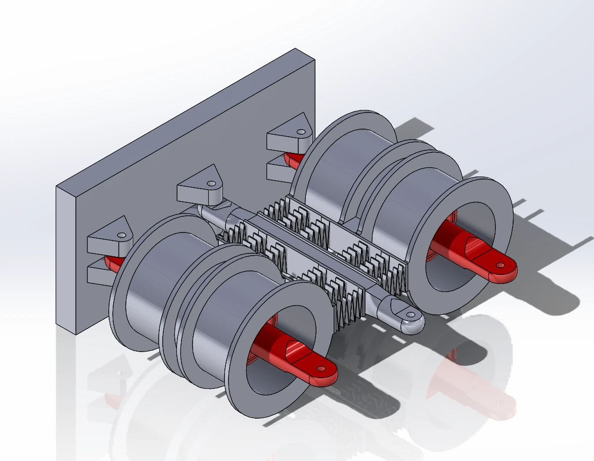
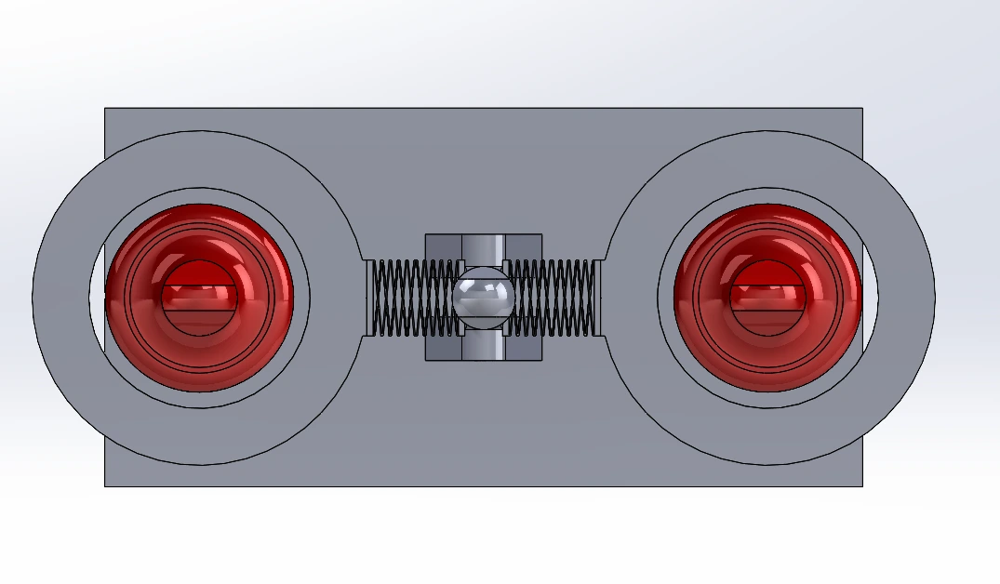
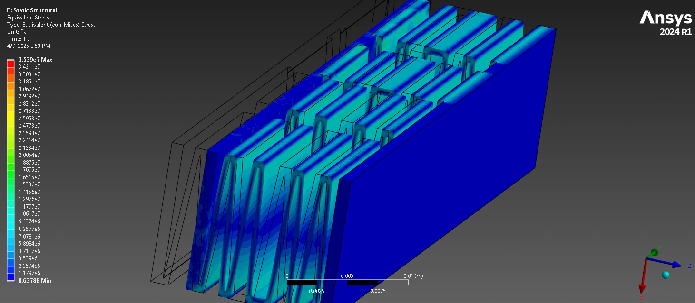
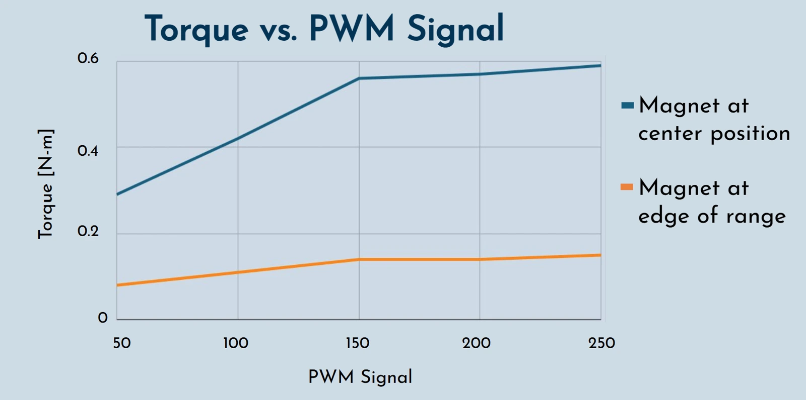
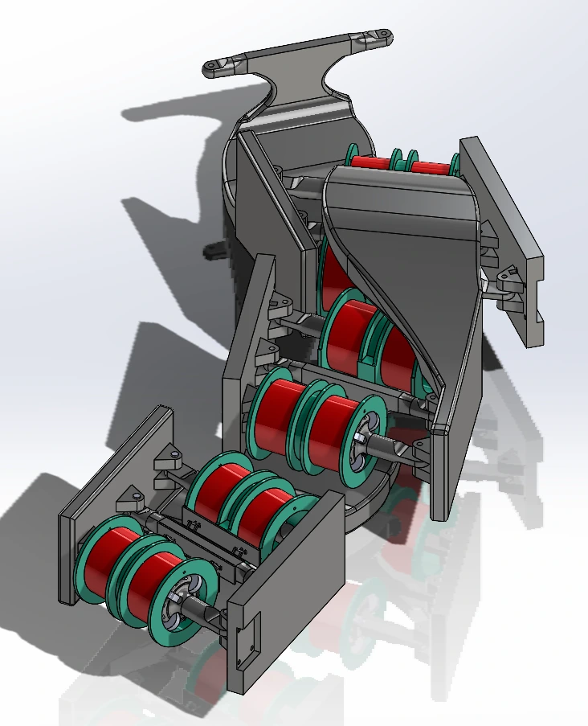

Senior design · University of Pittsburgh
Electromagnetic fish-like actuator
A modular actuator that combines electromagnetic forces and a compliant structure to investigate a variable-stiffness joint for a fish-like robot.
- Context
- Undergraduate senior design · Spring 2025
Sponsor: Dr. Nikhil Bajaj - My role
- Mechanical design, prototyping, and analysis within the senior-design team
- Status
- Single-actuator bench prototype
Multi-actuator spine developed in CAD
The prototype in motion
Position control & force testing
Original bench recordings.
Play individually, at their recorded speed.
Adjust the command.
Watch the joint respond.
Turning the blue potentiometer changes the actuator position. The view shows the wound coils, moving structure, and operator input together.
This is a demonstration of the physical response, not a target-versus-measured angle trace.
How the drive is organized →Observe the response
under load.
A spring scale is connected to the actuator during a manual force check. The recording shows the scale and the mechanism in the same view.
The report’s numerical torque result is documented separately below; it is not a value extracted from this clip.
Read the reported test results →More bench footage 2 short clips
Actuator and test equipment
A wider view of the assembled actuator, wiring, nearby thermal camera, and bench power supply. No temperature or power result is inferred from this short recording.
Motion at the mechanism
A short, closer view of the four-coil arrangement and moving structure during bench operation.
An actuator for a fish-like spine
My senior-design team developed a modular electromagnetic actuator as a building block for a fish-like spine. The long-term goal was body–caudal-fin locomotion: connecting several joints so that their motion could form a traveling bend along the body.
Our semester focused on one actuator—its geometry, fabrication, control, and bench tests. A waterproof swimming robot and coordinated motion across several actuators were outside the completed prototype.
Project basis: team senior-design report, Binder V2, April 2025, “Project Summary” and “Project Continuation.”
The mechanism
The adopted design places four custom-wound solenoids around permanent magnets. Two outer wings connect to a central bar; a thin compliant connection allows bending in the intended direction while restricting lateral motion. Changing the balance of electromagnetic forces deflects the wings.



We compared a stacked-cylinder concept, a rack-and-pinion transmission, and the compliant design. The compliant version avoided the additional sliding and gearing of the rack-and-pinion concept, but introduced its own questions about flexure stress, fatigue, and magnet-to-housing clearance.




The ANSYS work checked the mechanical response of the printed structure under imposed loading. That analysis is distinct from the electromagnetic behavior and does not establish long-term fatigue life.
Actuation and control
The prototype uses an Arduino Uno and two drivers, each driving a pair of solenoids. Coils 1 and 4 share one driver; coils 2 and 3 share the other. A nine-degree-of-freedom sensor supplies orientation information, while switches and potentiometers let the operator change modes and command settings.
The control concept separates position from stiffness: the difference between opposing coil drives produces motion, while their common drive level sets the opposing bias. This was a variable-stiffness design objective, not a fully characterized stiffness-control result.
The report documents both feedback-based positioning and an open-loop sinusoidal-motion mode. It also notes that direct potentiometer control gave better results than the tested feedback implementation. Smoother closed-loop motion remained an improvement to make.
Source: Binder V2, “Hardware” and “Controls.” The report describes Arduino IDE development and explicitly states that the sine-wave mode used no feedback.
What the tests showed
We checked angular motion with a protractor and the onboard sensor. The report describes digital force-gauge measurements using two procedures: allowing the actuator to pull the gauge, and pulling the actuated bar back to its center position. Torque was then computed from the measured force and the 45 mm moment arm.
Measurement context: the newly recovered video uses a spring scale. The numerical results below come from the report’s documented tests; this footage is not treated as a recording of the same measurement run.


The report’s text records a maximum torque of 0.547 N·m, below the 1.23 N·m design requirement. The torque, ±18° angular range, and coordinated multi-actuator-motion requirements were marked unmet. Magnetic actuation and the target beat-frequency requirement were marked achieved.
These tests established a functioning actuator and identified limits to address, rather than demonstrating a complete robotic fish. The proposed next changes included the coil design, joint geometry, and control implementation.
Source: Binder V2, “Angle Testing,” “Force Testing & Torque Output,” and “Validation Outcome.” Numerical results are reported values from the team’s bench tests.
From one joint to a spine
We also modeled how the modules could connect in series. The images below show that proposed assembly, not a built, synchronized spine.


This project connected mechanism design with fabrication and measurement: the joint geometry set the available motion, coil packaging affected the force, and the controller had to work with the behavior of the actual prototype.
Increasing the coil turns was one direction proposed in our report. It remains a design change to evaluate, rather than an achieved force or torque improvement.